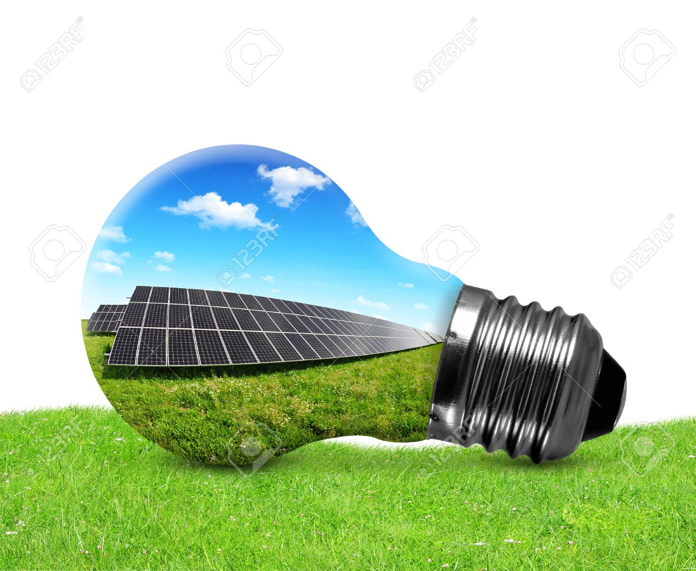
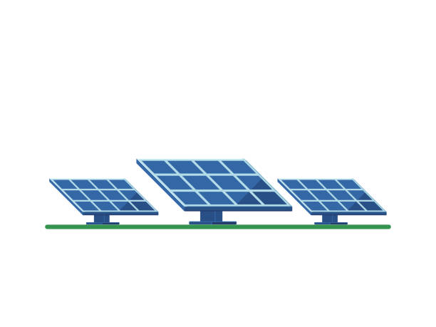

Ahorro a largo plazo
Reduce hasta un 90% tu factura de electricidad y protege tu economía frente a
futuros aumentos de tarifas. Tu inversión se paga sola en pocos años.

Compromiso con el planeta
Disminuye tu huella de carbono y contribuye a mitigar el cambio climático.
Utilizar energía solar evita toneladas de emisiones contaminantes al año.

Instalación profesional
Diseñamos e instalamos sistemas adaptados a tus necesidades. Nuestro equipo
técnico se encarga de todo: permisos, montaje, configuración y
mantenimiento.